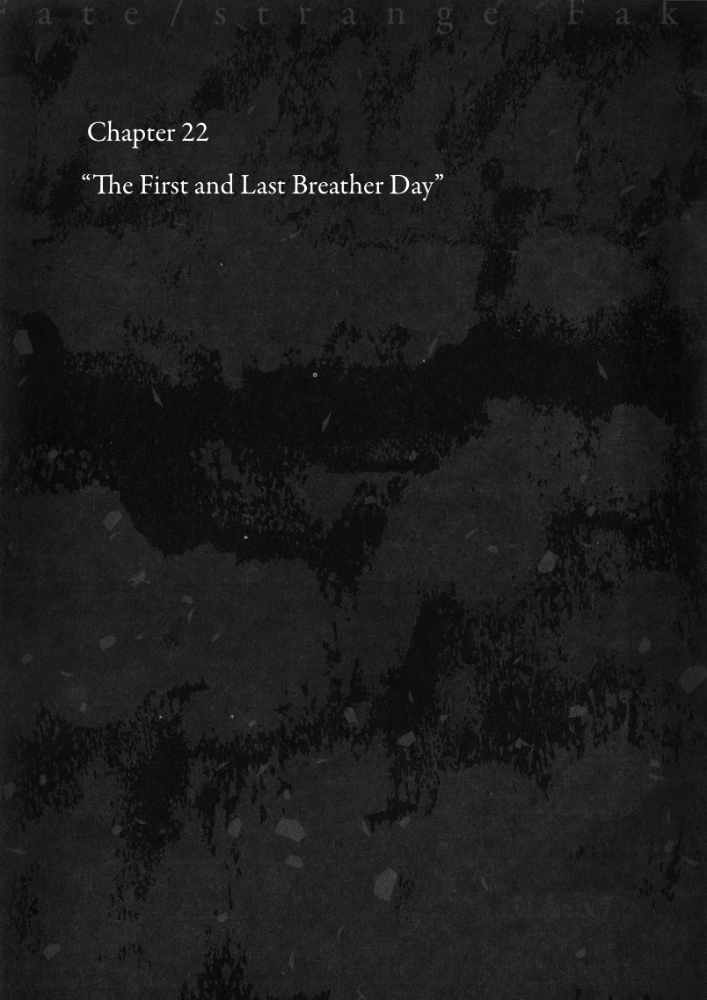

"O Primeiro e Último Dia de Respiro"
No dia seguinte
A manhã seguinte em Snowfield era tão calma que dava para duvidar que o tumulto do dia anterior tivesse realmente acontecido.
Mas isso só na superfície.
Novos tumultos se desencadeavam no mundo fora da cidade.
Oeste dos Estados Unidos, noticiário
--Nossa cobertura especial continua hoje. O governo apresentou a seguinte interpretação para a explosão no rio em Washington D.C.: "Asteroides não detectados colidiram, e os fragmentos em queda arrastaram consigo satélites descartados."--
--Estas são imagens do Círculo Polar Ártico, onde caiu o maior dos objetos voadores. Observem com atenção. O objeto, que se acredita ter sido lançado a partir do sul, congelou ao cruzar a fronteira entre o Alasca e a Rússia antes de cair na água. Ele atravessou do Mar de Chukchi até o Polo Norte, abrindo uma enorme cratera no gelo marinho! Estima-se que quinhentos mil quilômetros quadrados de gelo tenham sido perdidos. Isso é um bloco de gelo do tamanho da Espanha evaporado em minutos. Exames mais detalhados...--
--Se o objeto que caiu no Polo Norte tivesse atingido uma área urbana... Não, esse não seria um problema apenas da humanidade. Se aquilo tivesse caído em qualquer lugar que não fosse o Polo Norte, teria provocado um efeito irreversível na rotação da Terra, causando...--
--Sensores defeituosos identificaram por engano como manufaturado o objeto que caiu nos arredores da cidade, elevando temporariamente a tensão entre nações. Os governos americano e russo anunciarão mais tarde seus projetos para lidar com a situação em...--
--A seguir, a previsão do tempo. O grande redemoinho designado Furacão Inanna avançou em linha reta para nordeste, e há múltiplos relatos de danos graves causados por seus tornados secundários. A aceleração temporária de Inanna parece ter se estabilizado por enquanto, mas ele continua a se intensificar em ritmo alarmante. Por mais inacreditável que pareça, numerosas sequoias-gigantes com cerca de setenta metros de altura, no Parque Nacional da Sequoia, foram arrancadas pelos ventos. Os especialistas ainda analisam o que fez o furacão aumentar tanto de escala em questão de minutos. Muitas teorias que circulam online atribuem isso ao choque dos asteroides ocorrido minutos antes, mas essa especulação continua totalmente sem comprovação. Cuidado com fontes não confiáveis. A seguir, o comunicado do governo: --
4ª manhã, oeste de Snowfield, região de floresta
A floresta se remexia.
Os ventos ficavam cada vez mais fortes por causa do gigantesco furacão que se aproximava de Snowfield, mas as árvores da floresta deformavam a própria folhagem de maneira sistemática para resistir a esses ventos.
As árvores se remexiam cada vez de forma mais ordenada, formando uma espiral gigantesca girando na direção oposta à do vento quando vista de cima.
No centro da floresta havia alguém que ao mesmo tempo combinava e não combinava com a natureza exuberante ao redor.
Sua aparência era um agregado da beleza da Mãe Natureza, mas estava coberta por roupas de grife produzidas pela sociedade moderna.
Ao seu lado havia uma garota com um traje urbano demais para um acampamento na floresta e uma boneca mecânica do tamanho de um prédio, contorcendo-se sem descanso.
O fantoche de dezenas de metros de altura era cercado por um círculo flutuante de rochas cortadas de maneira uniforme e barro cozido pelo poder dela, e o chão nivelado por seus passos estava revestido por pavimentação de pedra, como se também fosse manipulado por sua Energia Mágica.
"Mas nossa... as conquistas obtidas com o relâmpago apareceram bem demais em você, garota", disse a mulher de roupa de grife, Ishtar possuindo o corpo de Filia, enquanto observava Berserker, parecida com uma boneca mecânica. "Ela sempre fica assim quando é invocada nesta era atual, será? Ou você usou alguma coisa estranha como catalisador para invocá-la, Haruri?"
"U-usei! Ah... eu estava planejando invocar Berserker Edison... então meu catalisador foi uma lâmpada Mazda..."
"Hmm? Mazda no sentido de Ahuramazda? Foi por isso que...? Impossível, o sistema não pode ser tão arbitrário assim. Se fosse..."
Ishtar/Filia tocou de leve a mão de Berserker.
Só de encostar na torrente de Energia Mágica que vinha daquela mão já bastava para a Mestra de Berserker, Haruri, sentir a própria mente ser devorada.
Não, talvez essa sensação seja mais real do que eu pensei. Talvez ela realmente corroa e queime meus Circuitos Mágicos se eu baixar a guarda.
A Energia Mágica rodopiando dentro do corpo do homúnculo da família Einzbern era densa a ponto de realmente fazer isso. Tal era o poder esmagador do éter da Era dos Deuses.
Ishtar usou seu poder para uma busca simples e voltou dela com um sorriso de plena satisfação.
"Isso mesmo, foi exatamente o que imaginei. O seu melammu se ajustou a esta era. Agora que a humanidade aprendeu a controlar eletricidade, pólvora e todo o resto, a própria civilização dela virou uma nova forma de calamidade... se entendi direito."
"Se ajustou...?"
"Ela é uma compilação de tudo o que a humanidade considera calamidade. Bem, obviamente não consegue reproduzir tudo, já que está limitada ao receptáculo de Servo, mas... quando eu alcançar minha forma definitiva, poderei libertá-la desses grilhões horríveis."
Grilhões.
Com um sorriso ousado, Ishtar chamou a Origem Espiritual da classe Berserker que atualmente manifestava aquele Espírito Heroico de nada além disso.
"Quando meu templo estiver completo, isso vai elevar o nível do Núcleo Divino neste corpo... E, quando isso acontecer, poderei redesenhar livremente as tábuas removíveis do chão deste planeta. Ah, não dá para sentir o sonho se realizando? Eu poderei observar a humanidade pelo tempo que eu quiser, e a humanidade terá a mim observando-a até o dia em que for extinta. Uma situação de ganha-ganha perfeita! Esta era moderna inventou umas expressões realmente úteis! Amei esta!", Ishtar assentiu empertigada depois de pronunciar um termo puxado do conhecimento de Filia ou do próprio conhecimento do mundo.
"..."
Mas então apagou imediatamente o sorriso do rosto e lançou à cidade um olhar de puro desagrado.
"Consigo sentir aquele monte de sucata olhando na nossa direção... Tenho vontade de triturá-lo até virar pó de laterita e espalhá-lo pelo oceano, mas sou paciente. Vou lhe conceder mais um pouco de tempo de vida."
E então o vestígio da deusa dentro de Filia se voltou para a marionete gigantesca que estava preparando o terreno para a construção de seu templo.
"Embora ele não esteja olhando para mim, está olhando para você, sua amiga de infância", sussurrou.
"?"
Ignorando as dúvidas de Haruri, Ishtar falou com Berserker numa tentativa de descarregar a própria frustração.
"Você ainda é senciente? Sua consciência desapareceu por completo... ou está apenas escondida? Bem, de um jeito ou de outro, aquele monte de sucata nunca vai parar de se debater em vão."
Crystal Hill, último andar
"Você ainda está aí... Huwawa?"
Tiné Chelc ouviu com clareza o sussurro de Enkidu.
Não muito tempo antes, o Lancer inimigo havia retornado ao quarto de hotel dela.
Tiné sentira a presença deles subir cada vez mais ao céu na batalha violenta contra o que quer que tivesse aparecido na tarde anterior.
Ela não visualizara diretamente os acontecimentos, já que estava ocupada consumindo sem parar a própria Energia Mágica para conter o colapso da Origem Espiritual de Gilgamesh, mas sabia, pela reação de seus seguidores, que uma sequência de acontecimentos extraordinários ocorrera no dia anterior.
Mas, nem assim, ela se afastou um só passo de Gilgamesh.
Ainda que o fim do mundo estivesse visível da janela, nada conseguia libertá-la da sensação de que precisava permanecer naquele quarto canalizando magia para Gilgamesh.
Tiné já estava no limite quando Lancer retornou, mas eles prolongaram sua vida ao ligar a ela um caminho de Energia Mágica vindo de seu Mestre, o lobo prateado.
A ajuda lhe trouxe gratidão, humilhação e, acima de tudo, vergonha de sua própria impotência. Essas eram as emoções que processava quando ouviu o sussurro.
Huwawa... O nome do monstro que o rei Gilgamesh derrotou...!! Aquela besta de aço...?
As peças começaram a se encaixar na mente de Tiné.
A besta demoníaca atravessara o corpo de Gilgamesh com o halo multicolorido que usava.
Considerando que não se tratava de um único halo brilhando em sete cores, mas de sete halos sobrepostos, a lista de candidatos para sua identidade ficava muito curta.
Tudo faria sentido se realmente fosse aquela besta.
Gilgamesh.
Cega pelo fulgor do Rei Heróico, Tiné havia se esquecido de uma coisa.
Havia uma besta que o rei temia.
Huwawa.
O guardião da floresta de cedros. Também grafado, em algumas fontes, como Humbaba.
Um monstro que Gilgamesh e Enkidu só conseguiram derrotar com a ajuda do deus Shamash na Epopeia.
"..."
Tiné continuou despejando Energia Mágica na Origem Espiritual de seu Servo caído. Enquanto seguia enviando energia para a carcaça humanoide de Gilgamesh, refletia sobre sua própria falta de atenção.
Se eu soubesse tudo de antemão... poderia ter providenciado de imediato um meio de derrotar aquela besta de aço. Como pude esquecer que o rei Gilgamesh não venceu sozinho todas as batalhas da Epopeia?
"Awoo."
A quimera sentou-se ao lado de Tiné, percebendo a sombra em seu coração. O lobo prateado, Mestre de Enkidu, ergueu abruptamente a cabeça e soltou um ganido preocupado.
"Obrigada... Você salvou minha vida."
Vendo a preocupação sincera do lobo prateado por um animal mais fraco, Tiné pensou:
Isso mesmo. Não posso me permitir agora ser vencida pela miséria. Enquanto eu estiver viva, cumprirei meus deveres como descendente dos guardiões da terra. E também meus deveres como seguidora do rei Gilgamesh...
Se o próprio Gilgamesh, naquele estado, pudesse ouvir isso, talvez zombasse da arrogância de ela imaginar que podia cuidar das necessidades dele como trabalho secundário. Talvez chegasse até a julgar essa insolência digna de pena capital.
Mas, estranhamente, Tiné não temia isso.
Se o rei a condenasse à morte, ela faria as pazes com seu destino predeterminado.
No entanto...
Tiné sabia que não podia continuar como estava.
O que Gilgamesh lhe dissera no cassino deste hotel voltou à mente da jovem.
- Não me importo que me reverencie. É apenas natural. Mas não deposite fé cega em mim. Se seus olhos podem brilhar, use-os para ver o próprio caminho. Não, não apenas a mim. Seja esse "Deus", ou essa "bênção da Natureza" de que você fala, ou o desejo querido de gerações de ancestrais, tanto faz. Abandonar o pensamento para reverenciar ou depender de algo significa deixar sua alma apodrecer.
Essas palavras se repetiam vezes sem conta na mente de Tiné, sempre estimulando sua alma.
Pense. Continue pensando. Nunca deixe seus pensamentos pararem.
Tudo o que ela podia fazer era enviar Energia Mágica à Origem Espiritual de Gilgamesh ao custo da própria vida, e ela não podia se dar ao luxo de se sentir satisfeita apenas com isso.
Não podia permitir a si mesma pensamentos positivos sobre a própria situação.
O tempo que poderia usar para desculpas pobres como "fiz tudo o que pude" era tempo que valeria muito mais a pena gastar pensando sem parar no que um Mestre pode fazer, no que um mago pode fazer e no que Tiné Chelc pode fazer.
Os nervos de Tiné se aguçaram numa tentativa de romper a casca que os continha. Seus Circuitos Mágicos estavam sendo progressivamente assimilados à terra.
O povo de sua tribo é absorvido pela terra quando morre.
A própria Tiné também está sincronizada ao veio do dragão por toda a vida e está destinada a um dia tornar-se parte dele.
Por isso, ela percebe.
Tiné, guardiã da terra, conseguia sentir com clareza que ela estava sendo profundamente alterada.
Sua própria terra estava sendo repintada de outra cor.
Não se tratava necessariamente de uma mudança maligna. Consigo sentir que a terra está... restaurando um tempo antigo. Mas... devo aceitar isso? O que preciso fazer?
Ela deveria estar furiosa, reconhecendo aquilo como reconhecia a invasão de sua terra pelos magos estrangeiros.
Mas a indecisão se instalava dentro dela.
A hesitação de Tiné Chelc vinha por um único motivo: ela conseguia sentir, ainda que só um pouco, o novo poder da terra fluindo para Gilgamesh.
Mas esse poder não mostrava sinais de se acumular na Origem Espiritual de Gilgamesh.
Estranhamente, parecia usar o cadáver de Gilgamesh como um portal para alguma outra dimensão.
Ou talvez escorresse através dele para um poço oco sem fundo.
Num sonho
Kuruoka Tsubaki estava sozinha, abraçando os joelhos, adormecida numa escuridão profunda, profunda.
Ela já não sonhava.
Já não desejava mais nada.
Isso porque aprendera o preço de seus sonhos se realizarem.
Ela se sentiria melhor se tudo fosse falso. Se simplesmente pudesse despertar no fim e descobrir que aquilo não passara de um sonho.
Mas a realidade era cruel.
Sem que ela soubesse, muitos haviam sido sacrificados por causa de seu sonho.
A jovem não tinha uma compreensão concreta de tudo o que havia acontecido.
Mas havia uma coisa de que tinha certeza.
Ela fizera muita gente sofrer.
Acreditara ter se tornado amiga dos homens e mulheres mais velhos vestidos de preto, e depois descobrira que só os atrapalhava.
Desculpa. Desculpa. Desculpa. Desculpa.
Quanto mais repetia essas palavras, menos claro ficava por que estava pedindo perdão, até que os pedidos de desculpa se tornaram apenas um depósito sem sentido de autonegação para a garota à deriva no vazio.
Em quaisquer outras circunstâncias, ela teria sido absorvida imediatamente pelo vazio, sem deixar vestígio de seus pedidos de desculpa vazios nem da forma de sua alma. Ainda assim, a consciência de Kuruoka Tsubaki mantinha sua forma graças ao Servo severamente debilitado que possuía. Porque Pale Rider fizera uma membrana com a própria Origem Espiritual para envolver e proteger a garota.
No entanto, o fundamento da existência desse Servo não era outro senão a alma da própria garota.
Se sua mente continuasse a se misturar àquele mundo oco, ela desapareceria por completo e sem possibilidade de reparo. Se isso acontecesse, o Servo perderia o caminho de Energia Mágica que vinha dos Selos de Comando e seria apagado por completo.
Rider não temia o próprio apagamento.
Ele nunca possuíra esse tipo de ego.
Mas, fosse por conta do papel de Servo que o Graal lhe concedera ou da influência de continuar construindo o mundo dos sonhos de Tsubaki, o programa de proteção da Mestra ainda permanecia visivelmente ativo quando todo o resto já se calara.
A membrana protetora criada pela forma de Servo da própria morte tinha a aparência de um ovo, símbolo da vida.
Tsubaki e seu Servo estavam destinados a permanecer à deriva naquele mar oco até ambos desaparecerem em poucos dias.
Exceto que isso não aconteceu.
Um pequeno fenômeno começou a tomar forma ao redor da garota e do Espírito Heroico.
Terra apareceu naquele mar oco que não tinha céu nem chão.
No começo ela era informe, como lama ou areia corrente.
Quando enfim se tornou solo firme, o ovo de Pale Rider contendo Tsubaki pousou lentamente. A principal diferença entre aquele lugar e o mundo criado por Tsubaki era que ali ela não era o centro do mundo.
Não havia luz.
Tanto Tsubaki quanto Pale Rider ainda não haviam percebido a mudança.
Pale Rider talvez a tivesse percebido, mas seu ego não era desenvolvido o bastante para que isso lhe importasse.
E, a partir daí, o tempo passou.
Uma lanterna azul começou a tremeluzir num ponto distante dos dois.
A luz silenciosa vagou pelo chão escuro e por fim chegou ao ovo de Tsubaki e Pale Rider.
Foi quando Pale Rider reagiu pela primeira vez.
Ele se esticou numa forma humanoide, bloqueando o caminho da luz azul para proteger Tsubaki.
Mas, depois de confrontar aquela lanterna azul, aparentemente concluiu que ela não era uma inimiga, retornou à forma anterior que envolvia Tsubaki e parou de se mover.
Tremeluzindo com algo que parecia hesitação, a lanterna intensificou aos poucos sua luz e formou uma jaula alongada ao redor do ovo. À primeira vista, poderia parecer uma prisão feita para encarcerar uma pecadora.
Mas, sem qualquer sinal de malícia ou hostilidade, a lanterna continuou a derramar sua luz morna sobre Tsubaki.
A "jaula" envolvendo gentilmente Kuruoka Tsubaki era como um berço cuidando de suas feridas.
Instalação subterrânea de Snowfield, oficina de Dumas
Sob a delegacia, havia uma rede de túneis subterrâneos ligada a várias instalações do centro.
Mais ao fundo, vinte metros abaixo da superfície, ficava a oficina do Caster da força policial, Alexandre Dumas père.
Dumas estava no fundo da sala, trabalhando em algum projeto. Ao lado dele, no centro do aposento, estavam Orlando Reeve, seu Mestre e chefe da Polícia de Snowfield, e sua subordinada Vera Levitt.
A voz animada de Dumas contrastava com a expressão carregada de Orlando.
"Os restaurantes do Crystal Hill eram finos, tenho de admitir. Eu não fazia ideia de que o sobrenadante de um bom bouillon podia funcionar como óleo de fritura. O interior da carne ficou num ponto perfeito."
"Já desisti de reclamar das suas saídas não autorizadas... Prendê-lo aqui com um Selo de Comando só tornaria seu trabalho ainda mais lento."
"Hoh, fico feliz em ver que você está começando a entender melhor como eu funciono, meu irmão. Ora, você está com cara de que vai me assar no espeto. Não seja assim. Já é um milagre o esquadrão policial ter saído daquela situação sem baixas. Houve um massacre ao redor deles, sem falar no que quer que estivesse acontecendo naquele mundo onírico."
"..."
O chefe pensou em silêncio nas palavras de Dumas.
Seja lá o que surgiu após a morte de Flat Escardos, não atacou a polícia. Isso confirma que aquela criatura é o próprio Flat Escardos e que nossa trégua ainda está valendo...? Se for o caso, será possível manter contato com ele?, examinou qual deveria ser o próximo curso de ação de seu grupo, tomando cuidado para não se deixar levar pela esperança.
"Pelo que consegui perceber, os níveis biológicos de Kuruoka Tsubaki estão um estágio abaixo do que estavam.
A situação parece altamente imprevisível...", disse Vera.
Pelo canto dos olhos, Orlando viu que os olhos dela, normalmente frios como uma lâmina, estavam turvos de impaciência.
"Não recebemos mais nenhuma atualização. Minha irmã vai permanecer com ela dia e noite, mas não sabe dizer se a garota vai aguentar mais três dias."
"Entendo. Se chegar a esse ponto, o Servo dela não vai conseguir manter a própria Origem Espiritual após a morte da Mestra. Sinto muito pela sua irmã, mas aquilo é capaz de aprisionar uma quantidade imensa de pessoas e Espíritos Heroicos dentro de sua Projeção de Realidade. Depois de ver um poder daqueles, não posso aprovar a ideia de salvar alguém que põe a cidade e seus habitantes em risco."
"...
Sim, senhor."
"O desfecho mais perigoso aqui é o Espírito Heroico formar um novo contrato com outra pessoa... mas um herói tão poderoso deveria desaparecer no exato instante em que sua fonte de energia fosse cortada. Mesmo assim, não devemos baixar a guarda até termos confirmação."
Vera não contestou o fato de o chefe praticamente lhe dizer para abandonar Tsubaki.
Ela estava entre os que experimentaram pessoalmente o poder daquele Espírito Heroico.
Sem a ajuda de Saber, teria perdido muitos aliados, se não o esquadrão inteiro.
Ainda assim, querer salvá-la significava aceitar o abandono de todo o restante da cidade.
E, mesmo assim, pensar na irmã, alheia ao mundo da magia, arriscando a própria vida para salvar aquela garota inevitavelmente deixava Vera abatida.
Esse não era o tipo de pensamento que um mago deveria ter, mas o chefe lhe ensinara justamente a não pensar como mago, e ela sabia que muitos outros membros da força policial pensariam da mesma maneira.
De certo modo, a maioria deles estava ali exatamente por sua incapacidade de abandonar a moral e a filosofia humanas comuns como um mago deveria fazer.
Fora isso, como alguém que estava ao lado de Orlando havia muito tempo, Vera sabia que essa decisão frustrava o chefe mais do que frustrava qualquer outro oficial.
Levando em conta sua mente lógica de mago e sua posição como chefe, a resposta ideal para ele não seria abandonar Tsubaki, mas eliminá-la ativamente.
Ou concluir de uma vez a Guerra do Santo Graal para ver se a saúde dela melhoraria ao ser libertada dos Selos de Comando.
Afinal, o que é que eu estou tentando concluir com isso...?
Dilacerada pela ingenuidade das ilusões convenientes em que depositava esperança, Vera tentou reorganizar os pensamentos, descartando por completo o aspecto emocional.
Sua tentativa foi interrompida por um aroma suave, mas marcante, que lhe tocou o coração ao cócegar as narinas.
"...?"
Ao erguer a cabeça, viu Dumas vindo do fundo da sala com uma grande bandeja nas mãos.
O cheiro apetitoso vinha dela. O chefe, ao lado, arqueou a sobrancelha para Dumas.
"Yo, está pronto."
Ignorando os olhares, Dumas colocou a bandeja sobre a mesa da reunião.
Estranhamente, a mesa barata de escritório teve cor e forma sobrepostas, transformando-se numa mesa de jantar luxuosa, digna de um castelo nobre ou de um restaurante tradicionalíssimo.
A toalha ondulou com a brisa, e a cena passou a ser iluminada suavemente por candelabros que surgiram do nada.
O conteúdo da bandeja era tão elaborado que Vera já se sentiu satisfeita só de olhar.
O prato de carne reproduzia um jardim de corte real usando a massa folhada, o molho, os vegetais recortados em formatos específicos e a mousse. Até as lâminas finas de trufa servidas de acompanhamento contribuíam para a "paisagem" construída sobre o prato.
Mesmo desconsiderando os vegetais decorativos, aquilo era fruto de uma técnica lapidada por estudo devotado, muito além do nível alcançável por um gourmand que apenas consome sem criar.
Era praticamente uma escultura completa, mas seu aroma rico fazia a vontade de prová-la o quanto antes esmagar a sensação de que seria um desperdício destruir uma obra de arte. A cor mais vívida naquela composição era a do sabor, que estimulava a língua e o estômago.
"O que é isso...?"
"Hã? É a mesma coisa que fiz com as armas de vocês. Só embelezando um tiquinho a história da mesa. Conhece magia de Projeção? É mais ou menos uma variante daquilo. Suas coisas voltam ao normal quando você terminar de comer", respondeu Dumas ao resmungo de Orlando.
"Não, não foi isso que eu quis dizer... Foi você que preparou essa refeição?"
"Ah, sim. Tinha umas armas sobrando e uns trecos que ninguém estava usando, então reescrevi tudo e transformei em utensílios de cozinha. Mas relaxa, eu não pegaria uma adaga envenenada e transformaria em faca de chef."
O Servo falou sem o menor vestígio de culpa, mas o chefe estava mais dominado pela surpresa do que por irritação ou raiva. Ele sabia que Dumas era um gourmand tão meticuloso que caçava pessoalmente a carne que cozinhava, mas o nível daquela habilidade estava vários degraus acima do que imaginara.
"Você usou sua magia para preparar esta refeição?"
"Não. Minha magia de amador não é ferramenta confiável para quem quer criar sabor."
"Entendo... Você coloca sua culinária acima das criações do seu Fantasma Nobre e, por isso... Não, não vou completar essa frase. Eu me perguntava o que estava fazendo aí atrás, mas jamais teria imaginado que estivesse cozinhando. Você ocultou o cheiro?"
"Eu não queria que vocês dois viessem me parar na metade. Encontrei um bom faisão pela cidade, então não dava para desperdiçar a chance."
Dumas continuava invariavelmente impenitente.
Ao ver o suspiro exasperado do chefe, Dumas abriu um discurso, virando-se de lado para garantir que sua saliva não caísse sobre os pratos.
"No começo, eu ia fazer uma galantine fond acompanhando um remix à base de Lucullus de alguma coisa do cardápio da Tête Noire, mas não tinha os ingredientes que eu queria. Também quis experimentar a massa folhada desta era enquanto ainda estou aqui, então tentei minha mão num peito de ave com bordas de massa. Faisão é de longe o pássaro de cheiro mais agradável para mim, por isso peguei leve nas leguminosas aromáticas do molho. Mas, se vocês não forem muito chegados em faisão, posso ajustar a receita rapidinho, meu irmão e senhorita. Não é algo que eu costume fazer, mas quero servir o melhor possível nesta ocasião especial."
Vera olhou para o prato com ainda mais surpresa diante daquele comentário, o mais fluente que Dumas proferira até então.
"Que surpresa. Sua primeira ordem depois de ser invocado foi hambúrguer, então eu não o via como o tipo de pessoa que cozinha uma comida dessas."
"Heheh. Isso é coisa que diria alguém que leu meus romances, minhas peças ou minhas biografias, senhorita Vera? Se você realmente quiser me conhecer, precisa ler o que escrevi sobre comida. Os Três Mosqueteiros e La Comtesse de Salisbury não são os únicos lugares onde minha essência está. Na verdade, é nos meus livros de culinária que eu sou mais Dumas."
Depois dessa observação alegre, Dumas voltou ao fundo da sala e retornou com três pratos.
"Desde o dia em que fui invocado, venho comendo de tudo: daquelas gelatinas duras de loja de conveniência e hambúrgueres de um dólar até refeições de alto nível que praticamente consumiram todo o nosso fundo de guerra. Tentei me adaptar às maneiras à mesa desta era e, bem, tem sido um tempo ótimo. Não vou dizer que não tenho queixas, mas talvez isso seja só eu sendo antiquado, então dei uma chance honesta a tudo."
Convidando os dois a se sentarem, Dumas dividiu a refeição em três partes e levou cada fatia a cada prato.
Em contraste com sua rusticidade habitual, os gestos de Dumas à mesa eram perfeitamente refinados.
Vera e o chefe trocaram um olhar, confusos com aquele desenvolvimento aleatório, mas nenhum dos dois conseguiu reunir coragem para dizer que aquela não era a hora.
Havia um significado oculto no comportamento de Dumas.
Seu comportamento passado mostrava que ele era do tipo que lançava esse tipo de pista, mas, mais importante, o charme gastronômico do prato era suficiente para encher até o rígido Orlando e Vera de fome.
Resumindo: aquele jantar era, sem sombra de dúvida, o melhor que Orlando e Vera já haviam provado na vida.
Depois da refeição, Dumas levou a taça cheia de vinho à boca e soltou uma risada abafada.
"Cara, nada supera o avanço da pesquisa histórica. Descobri que aquilo que escrevi lá atrás sobre o Chef Taillevent ser cozinheiro de Carlos VII hoje é tratado como besteira. Tudo bem se eu falasse isso num romance ou numa peça, porque ele servindo a Carlos VII rende uma história melhor, mas, entre todas as coisas em que eu podia errar os fatos, fui errar justo num livro de receitas. Embora, claro, o próximo avanço nessa pesquisa talvez prove que eu estava certo, quem sabe?"
Dumas não demonstrava o menor sinal de se importar com o suposto erro.
"Mas, cara, eu me sinto abençoado por saber que a pesquisa culinária ainda continua avançando. Não dá para acreditar que a gente já aprendeu até a comer rim de boi nos dias de hoje. Posso dizer com absoluta confiança que a culinária é uma das fontes de energia que movem a evolução da humanidade. Quer dizer, eu sei que comer é uma das nossas três grandes necessidades físicas, mas realmente acho que esta talvez seja a mais fundamental de todas."
Os olhos de Dumas estavam semicerrados, mas as pálpebras não conseguiam ocultar o brilho apaixonado em suas pupilas.
"Queremos fazer o jantar de hoje evoluir além do jantar de ontem. Evoluir em que direção? Mais saboroso? Mais digestivo? Mais barato? Mais leve? Mais saudável? Não importa. Enquanto existir nem que seja um único homem tentando levar a culinária ao próximo patamar, essa cultura jamais conhecerá estagnação."
Nesse ponto, ele deu um rápido encolher de ombros. A parte seguinte pareceu menos dita aos outros e mais um lembrete para si mesmo.
"Mas não me entenda mal, amigo. Eu não sou desses que acreditam que o mais novo é sempre o melhor quando o assunto é comida. O melhor cordeiro assado que já comi ainda supera qualquer coisa que você faça no fogão mais moderno de uma grande cidade. Foi quando eu visitava umas ruínas em Djem-Djem e me serviram um carneiro inteiro assado na lenha. Verdadeira culinária do deserto."
"Assado na lenha? Não era o que eu esperaria ouvir como o melhor."
"Só porque alguma coisa é assada debaixo de cinzas e terra não quer dizer que seja rústica ou desleixada. O preparo anterior ao cozimento é extremamente meticuloso e baseado em eras de história e experiência. Até hoje eu o considero superior a qualquer carneiro que comi em restaurantes europeus. Bom, não sei como as coisas estão hoje, claro... Ah, agora fiquei com vontade de comer isso de novo. Arranja uma passagem para Túnis para nós, meu irmão."
"Não seja ridículo, ainda não resolvemos sequer o problema que impede as pessoas de deixar a cidade."
O fenômeno supostamente causado pelo Servo de Kuruoka Tsubaki ainda não se estabilizara por completo.
Eles presumiam que o Servo apenas espalhara uma "doença" de natureza incomum, sem manipular ativamente os infectados.
Os pacientes do hospital já haviam recuperado a sanidade e presumivelmente tinham sido libertados do mundo onírico, mas ainda se sentiam pressionados a não querer deixar a cidade, e metade dos que de fato saíram logo retornou depois de sofrer acessos de terror e ansiedade.
"A esta altura, a dominação mental já não deve estar consideravelmente mais fraca? Tenho quase certeza de que qualquer mago com um Artefato Místico minimamente decente já conseguiria sair da cidade."
"Espere, Caster... O que você sabe?"
Alarmado com a forma como Caster falou, o chefe trocou imediatamente de chave mental, apagando o gosto agradável que a refeição ainda deixava.
"Ora, você já devia saber que isso vinha aí. Depois de aqueles meteoritos, satélites ou seja lá o que for terem caído por tudo quanto é canto do mundo ontem... qualquer um percebe que esta cidade é o epicentro, e ainda assim seus amigos 'mandachuvas' nem telefonaram para dar um oi. Você veio aqui porque quer respostas. Mais exatamente, porque quer descer um andar abaixo daqui para ver se aquele Graal Maior fajuto de vocês foi levado para outro lugar."
"... Exatamente."
"Eu entendo, meu irmão. Depois de um impacto desses no mundo, é óbvio que você ia querer saber o que seus 'chefes' decidiram. Seu objetivo é regular o ambiente que cerca a Guerra do Santo Graal... ou seja, a sociedade humana daqui. Se vocês falharem, todo mundo morre. Fim de linha. E você não quer isso, não é?"
"Seja conciso. O que você sabe?"
Havia muito tempo Caster conseguia obter informações por uma rede que nem mesmo Orlando era capaz de identificar.
Julgando pelos relatos de seus subordinados e pelas conjecturas gerais sobre as habilidades de Dumas, Dumas provavelmente modificara histórias sobre seu computador, seu rádio e sua internet, elevando-os a pseudo-Artefatos Místicos, objetos com parâmetros inferiores aos de seus Fantasmas Nobres habituais.
O chefe estava certo de sua especulação e achava que aquele era o dia de colocá-la à prova, mas, justo quando chegava a hora de uma grande revelação, deparou-se com uma pergunta mais importante que precisava fazer primeiro. O que Caster sabe?
A pergunta do chefe estava mais séria do que nunca. Depois de desviar os olhos por um momento, Dumas respondeu escolhendo cuidadosamente as palavras.
"Os caras falaram... Código 983 [Queda da Aurora]. Você sabe o que isso significa?"
"...!
Quando ele será executado? Quanto tempo ainda nos resta?"
"Oh, você não vai duvidar de mim?"
"Não sei o que aquele jantar deveria simbolizar, mas não consigo imaginá-lo como preparação para uma piada ruim. Nenhum homem é tão fiel à culinária quanto você. Agora que provei sua comida, eu sei disso!"
A declaração do chefe apagou toda emoção do rosto de Dumas por um instante, antes de enchê-lo novamente com um sorriso satisfeito e um dar de ombros.
"Cara, você é certinho demais. Tudo bem. A ordem foi emitida às 16h23, se formos pelo nosso fuso horário. Para execução quarenta e oito horas depois. A senhorita Francesca e Faldeus já devem ter recebido a notícia."
"Quinze minutos atrás...? Caster, você começou a cozinhar porque previu esse desdobramento?"
"Foi mal, isso aí foi só autoindulgência típica de Espírito Heroico. Eu tinha uma previsão que esperava muito que estivesse errada, mas não lhe contei antes do jantar porque sabia que você não ia parar para saboreá-lo se eu contasse. Além disso, meu irmão, eu não imaginava que seus 'chefes' estivessem mesmo com a cabeça tão torta assim."
"..."
Dumas reagiu ao silêncio do chefe apagando o sorriso e fazendo uma pergunta.
"Meu irmão, você já não estava meio certo de que isso ia acontecer?"
"Sim, não vou negar. Foi por isso que assumi que Francesca esconderia o Graal Maior aqui... ou será que ela está planejando fazer isso depois?"
Depois de ouvir os dois conversarem, Vera fez uma pergunta ao chefe com a sobrancelha arqueada.
"Chefe, perdoe a pergunta indiscreta, mas o que é o Código 983... [Queda da Aurora]?"
"É o codinome de uma operação para apagar tudo nesta cidade, inclusive a fundação mágica desta terra... lançando uma ogiva especial de grau máximo."
"...!"
"Essa contagem regressiva de quarenta e oito horas existe para lhes dar tempo de preparar o encobrimento do ocorrido. Isso terá de entrar para a história como uma grande calamidade em escala global... Acredito que as notícias públicas dirão que um fragmento de planetoide caiu diretamente sobre a cidade."
Vera ficou chocada ao ouvir os detalhes concretos.
Ela fora avisada de que aquilo podia acontecer.
Estava preparada para o pior, se chegasse a isso.
Mas ouvir a confirmação concreta de que de fato aconteceria fez seu coração enrijecer mais do que nunca.
Tudo o que lhe vinha à mente eram imagens de seus colegas, da paisagem da cidade e da irmã lutando dia após dia sem ter ideia do que estava sendo tramado nos bastidores.
O rosto de Vera permaneceu inexpressivo, mas seu corpo estava banhado em suor. O chefe comentou num tom desapaixonado:
"Se em algum momento nosso tratamento interno fosse julgado incapaz de processar a situação, a cidade poderia ser obliterada por ordem de Faldeus. Aquilo era o Código 982... [Ascensão do Abismo]. É um programa para sobrecarregar o Graal e os veios do dragão, desencadeando atividade anômala nos depósitos de magma e fazendo o apagamento da cidade parecer uma erupção. [Queda da Aurora], por outro lado, vem de fora... Em outras palavras, é um dispositivo reservado para o caso de nossos superiores julgarem a Guerra do Santo Graal impossível de administrar. Deve ser usado antes que se abra no mundo uma fenda destrutiva."
"Podemos solicitar o cancelamento da operação?"
"Se destruirmos o Graal à força, a atividade dos Espíritos Heroicos se tornará quase impossível. Há uma boa chance de conseguirmos manter sob controle a rampagem dos Espíritos Heroicos remanescentes. No entanto..."
Nessa última parte, o chefe se esforçou para manter o semblante neutro, mas a voz traiu sua frustração.
"O problema é que se somaram novas variáveis além dos Espíritos Heroicos."
"Você quer dizer Flat Escardos e... o homúnculo dos Einzbern?"
"Ambos estavam, de início, incluídos no sistema da Guerra do Santo Graal. Flat Escardos era um dos vários magos escolhidos para os espaços de Mestre não especificados... e o homúnculo dos Einzbern foi atraído até aqui por Francesca para servir de receptáculo ao Graal Menor.
Mas agora os dois tinham se transformado em outra coisa por completo.
Segundo os relatórios de Francesca e Faldeus nos últimos dias, o homúnculo dos Einzbern foi possuído por algo totalmente alheio à sua personalidade original. E o que quer que a esteja possuindo, Francesca insinuou com força saber o que é, é mais forte que um Espírito Heroico de baixo escalão.
"Numa Guerra do Santo Graal normal, as energias dos Espíritos Heroicos que saem da disputa se acumulam no Graal Menor... Isso significa que o que quer que esteja dentro do homúnculo do Graal Menor vai se beneficiar desse poder?"
Mesmo com um Graal Maior falso incapaz de reproduzir a Terceira Magia, a quantidade total de Energia Mágica acumulada já bastava para fazê-lo funcionar sem falhas como realizador de desejos.
Quando a Guerra do Graal chega ao fim, o Graal Menor deixa de ser humano e se torna receptáculo... É isso que está acontecendo com ela?
Se o poder do Graal se acumular em alguém com vontade própria e essa pessoa deixar a cidade sem restrições, será extremamente difícil encobrir qualquer coisa que ela fizer.
O que quer que tenha sido Flat Escardos demonstrou melhor do que ninguém por que Orlando temia que poder desse tipo fosse direcionado para fora da cidade.
Nações com conhecimento mais raso de magia ou estão comprando a ideia de que fragmentos de asteroide e lixo espacial caíram do céu, ou suspeitam que aquilo tenha sido explosão de mísseis de algum país ou um ato destrutivo intencional.
Mas as organizações mágicas, principalmente a Torre do Relógio, e as grandes nações ligadas a essas organizações já descobriram a verdade.
Aquela destruição foi causada pelo poder de um indivíduo.
Eles até conseguem encobrir a cratera no deserto do começo da Guerra do Graal sacrificando uma companhia de gás, mas além disso não podem fazer mais nada.
Como as coisas teriam sido diferentes se tivéssemos a cooperação plena da Igreja Sagrada...
O chefe de polícia recordou o rosto do padre caolho.
No passado, sua cidade natal fora transformada num inferno da noite para o dia por vampiros de alto escalão. Um grupo de monstros de poder incalculável: um Ancestral acompanhado de Apóstolos Mortos superiores.
Sempre que algo desse tipo acontece, a Igreja Sagrada consegue encobrir tudo com sucesso graças às suas conexões e ao seu conhecimento arcano. Apesar dessa sequência de êxitos, ela foi excluída da Guerra do Santo Graal de Snowfield por ser, em essência, completamente de fora do ritual.
Hansa Cervantes estava se valendo do precedente dos supervisores de Fuyuki para forçar sua entrada, o que tornava difícil saber até onde iria sua disposição de cooperar.
Ainda assim, o sigilo arcano é para eles um princípio tão importante quanto para nós. Por mais descarado que pareça, talvez valha a pena chamá-lo para lutar ao nosso lado. Embora, considerando as políticas da Igreja, a resposta dele possa muito bem ser "quarenta e oito horas é tempo demais, explodam a cidade em três"... Seria uma aposta enorme.
"Hah... Bons olhos, meu irmão. Mostram que você ainda não jogou a toalha. Você não quer transformar meu agrado na sua última ceia", disse Dumas, satisfeito.
"Claro que não. Se Faldeus está nos cortando de seu grupo, então não me importarei mais com ele também. Como chefe de polícia leal aos Estados Unidos da América, agirei tendo a segurança dos cidadãos como minha prioridade máxima", respondeu Orlando.
"Tem certeza? Pode acabar fazendo outras cidades serem pisoteadas pelos monstros que saírem desta, sabia? Não é por isso que os figurões estão tentando esmagá-los agora?"
"Também não vou permitir isso. Sem falar que não acredito que destruir a cidade e o Graal nela vá dispersar aquele Flat Escardos mutado ou... por mais que me doa admitir, aquele furacão perigoso que claramente está vindo na nossa direção."
"Então, mesmo sabendo de tudo o que está vindo, você ainda pretende lutar até o fim? Maravilha! Você é um verdadeiro irmão! Se tivesse escolhido desistir e afogar as mágoas, eu teria reescrito sua vida inteirinha."
Dumas se levantou da cadeira, sorrindo.
"O Clã Calatin vai começar a ficar ocupado. Mas, na hora do almoço deles, traga todos até mim. Nem que seja um por um. Quero oferecer ao time inteiro o mesmo jantar que vocês dois acabaram de provar."
"Esse gesto tem algum significado mágico?"
"Não. Nenhum. É só que, já que você quer que a equipe inteira sobreviva, achei que devia lhes dar algo para se lembrarem de mim."
Vera e Orlando ficaram sem palavras diante dessa confissão casual.
"Lembrarem de você?"
"Eu já falei, é só autoindulgência. Os romances que escrevi agora são coisas que qualquer um pode ter, e escrever um novo só para eles não me parece um gesto de gratidão suficiente. Então pensei que devia acertar em cheio o bando todo com a minha cozinha e, um dia, fazê-los olhar para trás e dizer: 'Ah, aquela comida que Dumas me serviu naquele dia foi a melhor que já provei. Não, preciso preparar delicadezas ainda maiores com minhas próprias mãos! Corram, rumo aos picos do sabor!'... Esse é o meu jeito de oferecer suporte material", brincou Dumas. Mas a parte seguinte de sua fala era bem mais sincera. "Você sabia? O faisão é uma espécie introduzida na Europa quando o capitão Jasão e os Argonautas a trouxeram da Cólquida para a Grécia. Não parece uma ótima dose de energia para alguém tentando ser herói? Eu contaria mais, mas estamos com tempo contado. Vão fazer o que têm de fazer. Se precisarem de algum Fantasma Nobre, posso ajudar a escolher a peça certa enquanto o bouillon está fervendo."
"Caster."
"O quê?"
O sério Orlando se curvou diante do Dumas que cantarolava, para lhe agradecer.
"Como mago e policial, não tenho obrigação nenhuma de me dobrar à sua sentimentalidade ilógica... mas, como chefe, sou grato por sua consideração pelos meus subordinados."
Dumas viu o rosto do Mestre tão mal-humorado como sempre, mas desta vez sentiu nele um traço de otimismo sincero.
"Vou ter menos tempo para comer e dormir nos próximos dois dias, mas não posso me dar ao luxo de desabar no trabalho. Por favor, prepare algo que realmente me sustente."
Com essas palavras finais, Vera e o chefe saíram. Depois de observá-los partir, Dumas monologou, entre uma risada abafada e outra.
"Merda, cara, hoje talvez tenha sido o último dia de respiro sem choque entre Espíritos Heroicos, e justo hoje eu estou essa pilha. Bom, estamos andando na corda bamba para ver se a cidade estará ou não morta em dois dias... Dependendo de como as coisas seguirem, isso pode mesmo ter sido a minha última ceia."
Será que a gente não está tentando mastigar mais do que consegue? Não me restam muitas cartas na mão. Estou vendo ao vivo a história interessante que eu queria desde o começo, isso é verdade, mas é uma pena esses sujeitos estarem tão dispostos a se sacrificar num clarão de glória.
Um suspiro profundo.
"Acho que me afeiçoei demais ao time do meu irmão para continuar sendo só um espectador... Estou perdendo o fio?", perguntou Dumas a si mesmo com ironia.
Depois de limpar a louça, sentiu vontade de conferir a fileira de livros numa estante no canto da oficina.
Chamou-lhe a atenção a edição em inglês de Os Três Mosqueteiros que comprara na livraria local.
A estante continha muitos livros de outros autores de sua época, não apenas os seus.
Ele puxou um deles.
Uma edição ilustrada de um conto de fadas escrito por um autor de quem fora amigo em vida.
"Não dá para acreditar que as crianças de hoje ainda leiam os livros dele. A Vela de Sebo. Não foi esse o que ele escolheu não pôr à venda? Ele dava a desculpa de que era imaturo demais quando o escreveu, mas, sinceramente, este sempre foi meu favorito..."
Fazendo comentários para si mesmo enquanto virava as páginas, os olhos se detiveram numa ilustração de uma garota acendendo um fósforo.
"As memórias dela estão desenhadas dentro das chamas do fósforo. Não acho que fosse isso que ele imaginou, mas essa composição lembra um pouco a forma como nós, Espíritos Heroicos, funcionamos..."
Com essas palavras autodepreciativas, Dumas virou a página e...
"Hm?"
Notando algo estranho, tornou a ler a página.
"Ah?"
A página aberta exibia a cena final do conto da garota dos fósforos.
Ele percebeu imediatamente o que estava errado.
O desfecho era completamente diferente da versão original do conto com a qual estava familiarizado.
O final em que a garota morria congelada, imersa em suas belas memórias, fora substituído por um em que ela era salva por uma família rica e passava a viver feliz.
"Ei, ei, ei... Espera, espera, espera, essa merda é séria?"
Aquele livro ilustrado era uma das versões publicadas regionalmente que reescreviam finais trágicos em finais felizes.
"Você... Ah, pelo amor de Deus..."
Ele conferiu de novo o nome do autor, incrédulo, e, depois de fazer isso, sua mão começou a tremer.
"Hahahaha...! Meu Deus! Como isso pode ser permitido?"
Ele desatou a rir.
"Eu já achava que o sujeito que trocou o gênero do Aramis na versão dele dos meus Três Mosqueteiros tinha feito algo interessante, mas isto aqui está em outro patamar... Eles mudaram completamente os fundamentos centrais de uma obra-prima do homem com o pau mais entranhado na bunda que já existiu! Mudaram a própria vida dele por inteiro!"
Com estrelas nos olhos, ergueu o livro de contos de fadas bem alto e continuou berrando.
"Não tem a menor condição! Um dos meus trabalhos principais era adaptar obras para o teatro, mas nem eu já virei uma narrativa estabelecida do avesso desse jeito! As localizações de Shakespeare feitas pelo velho Ducis não chegam nem perto! Os caras simplesmente quiseram pôr aquele final lá, coerência que se dane! Sempre achei que as coisas teriam saído muito diferentes se eu escrevesse uma história sobre os mesmos temas... Mas aí você simplesmente muda o final e vende o negócio mantendo o título original e o nome do autor! Inacreditável! Muito bem jogado, editores modernos! Isso é hilário! Eu daria tudo para ver a cara que ele faria! O que eu não faria para dizer 'Mas, sabe, meu caro, esse final feliz certamente tirou algumas pessoas de lugares bem escuros, e elas vão lhe agradecer por isso' diretamente na cara carrancuda dele!"
Era difícil julgar, por esse discurso comprido e cheio de gargalhadas, se ele estivera em bons ou maus termos com o autor original.
Até que seu sorriso se tornou consideravelmente mais suave.
"Bem, com uma provocação dessas... ele provavelmente só iria insistir que esta é a única história sobre a qual nunca vai falar... De todos os finais novos possíveis, foram escolher um em que ela é salva por uma família rica. É como diz a frase... A vida é uma série de ironias. Todo homem que pisa neste mundo é hediondo, e, ainda assim, belos são os seus destinos!"
Ele fechou o livro com olhos nostálgicos, relembrando seu tempo em vida.
"É por isso que você precisa ler os livros que compra em vez de só deixar a pilha crescer!"
Dumas fechou os olhos. Não havia ali qualquer traço da melancolia anterior. A única outra vez em que se sentira tão vivo fora no instante de sua invocação.
"Certo, agora que ele me deixou motivado, vamos fazer este cérebro trabalhar."
O telefone atrás dele tocou.
Ele presumiu que fosse o chefe de polícia ligando para dizer quantos oficiais viriam jantar.
Caminhou até o telefone ainda bolando os temperos secretos de sua receita, mas já redirecionando parte dos pensamentos para estruturar um novo roteiro.
"Hora de inventar um jeito de acertar na cara dos sujeitos que estão nos ignorando antes que a gente congele até morrer."
Centro Correcional Especial Colesman
"Não deveríamos informar Orlando da decisão da cúpula?"
"Não é necessário. Cortar a linha de comando do chefe Orlando sempre fez parte do procedimento para este caso. A única preocupação aqui é Francesca fazer alguma coisa que não devesse", respondeu Faldeus com indiferença à secretária chamada Aludra.
Mesmo depois de receber o aviso de que a cidade seria incinerada, Faldeus não deu sinal perceptível de ansiedade.
A Guerra do Santo Graal vinha sendo uma sucessão de complicações, mas essa possibilidade específica finalmente era uma que ele já considerara antes mesmo do início.
Por isso, a única fonte de preocupação do pessoal de cima era Francesca fazer algo desnecessário.
Sozinha ela não seria grande coisa, mas estava com seu Servo.
Depois de ver a escala da ilusão que os dois ergueram no distrito industrial, era perfeitamente possível que impedissem a incineração da cidade inteira com suas ilusões.
Talvez as ilusões de Francesca não fossem capazes de anular um efeito destrutivo engolindo a cidade por completo, mas com certeza seriam suficientes para enganar os sensores da bomba e o piloto, fazendo-os errar o ponto de impacto.
"Tudo o que precisamos é que ela use suas ilusões para levar o sistema do Graal Maior embora... mas ela dá sinais de estar se divertindo com toda essa complicação. Nunca dá para saber do que ela será capaz se começar a sentir que seria uma pena pôr fim a tudo isso."
"Qual será nosso curso de ação?"
"Retiramo-nos amanhã. Os restos da maldição do Servo de Kuruoka Tsubaki ainda não desapareceram, mas, no estado em que estão, um Artefato Místico comum já consegue superá-los. Isso, na verdade, até joga a nosso favor, porque os civis despreparados não conseguirão escapar da cidade. Vamos isolar Snowfield por completo do rádio e da internet em sincronia com a chegada do furacão. Não precisaremos nos preocupar com ninguém dentro da tempestade observando o que vai acontecer no céu."
"Mas o Furacão também está sendo reconhecido como uma das anomalias."
"Partindo da hipótese de que o Furacão foi atraído até aqui pelo poder de um Espírito Heroico ou pela atividade do Santo Graal, estamos especulando que ele perderá intensidade com a destruição da cidade. E bem, nossos cálculos indicam que ainda podemos reduzir a cidade a cinzas mesmo sob a força total da tempestade."
Sem sentir absolutamente nada diante do sacrifício de civis inocentes, Faldeus se dirigiu à própria oficina depois de dar algumas instruções a Aludra.
Depois de confirmar que não havia ninguém por perto, falou com a escuridão atrás de seu reflexo no espelho.
"Está ouvindo, Assassin?"
A escuridão se adensou, e Faldeus sentiu no fundo dela uma presença fraca, piscando.
"... Tenho duas variáveis preocupantes em mente. Flat Escardos desapareceu. É possível que já tenha deixado Snowfield... Se for esse o caso, não há nada que possamos fazer. Deixaremos a Torre do Relógio e a Sala de Aula El-Melloi assumirem a responsabilidade por seu aluno."
Ouço dizer que o papel daquele Lord existe justamente para essas horas.
Escolheu não verbalizar esse comentário cheio de desprezo, porque não havia motivo para dizê-lo a Assassin.
O que importava para Faldeus era a ordem que estava prestes a dar.
"Com a outra preocupação não é assim. Algo está possuindo o corpo de Filia, que trouxemos para usar como Graal Menor... Presumimos que sejam restos ou uma maldição de um Espírito Divino. Essa entidade está fincando raízes na terra e, neste momento, trabalha para alterar a circulação de Energia Mágica dela... Assassin, eu gostaria de pedir que investigasse os dois."
A escuridão não respondeu. Mas Faldeus continuou, certo de que estava sendo ouvido.
"Com sua Presença Oculta da classe mais ideal possível, você provavelmente é o único capaz de procurar por aquela Divindade que possui Filia e ainda sair vivo. Ela está customizando a própria terra para se adequar às próprias necessidades... No pior cenário, a terra alterada aumentará seu poder... a ponto de ela conseguir bloquear um ataque com poder de fogo suficiente para apagar a cidade."
Faldeus não contara isso a Aludra, mas sua análise apontava o aumento diário de Energia Mágica de Filia como a maior preocupação.
"Espero que a tempestade que se aproxima esteja sendo causada por um Espírito Heroico ou por um efeito da terra... mas, se for essa Divindade que a estiver chamando para cá, as coisas vão piorar num nível extremo. Se o Graal Menor se desconectar do Graal Maior e a Energia Mágica que compõe todos os Espíritos Heroicos, você inclusive, fluir para ela... este mundo verá deuses regionais outra vez."
"..."
A presença se moveu.
Tendo confirmado que estava sendo ouvido, Faldeus apagou as emoções e passou a se encarar como um boneco cuja mente e cujo corpo podia manipular como um todo.
Aquilo não tinha a intenção de enganar. O que ele estava prestes a dizer eram seus sentimentos sinceros. Ele apenas julgava que não devia demonstrar qualquer forma de emoção ao falar com Servos.
"Se você quer encerrar o ritual comigo e com você vencendo a Guerra do Santo Graal, então está sob um limite de dois dias. Para reverter a decisão da cúpula, precisaremos ao menos exorcizar os restos do Espírito Divino. Embora eu nem saiba se isso bastaria para fazê-los mudar de ideia."
"Não precisas suavizar tuas palavras, contratante."
"!"
Ele pensou ter ouvido a escuridão falar.
Faldeus separou as emoções do corpo e aguardou a frase seguinte sem suar uma gota.
"Teu coração decidiu que chegou o momento de gastar minha Origem Espiritual."
"Sim, exatamente."
Ele podia perder a vida se respondesse mal.
Faria sentido um Espírito Heroico comum matá-lo por uma resposta daquelas, mas a observação contínua que Faldeus fizera de Assassin revelava que ele não agiria de forma tão curta de vista.
Então Faldeus foi um passo além.
"Como seu Mestre... estou enviando você para morrer. Mas não é uma ordem para que se suicide. Estou apenas lhe dando um comando cuja chance de morte é alta. Depois de concluí-lo, você está livre para fazer o que quiser."
"..."
O Servo não demonstrou emoção alguma.
Sem hostilidade, sem malícia, sem resignação.
A sombra tremeluzente aguardava em silêncio, certa de que seu Mestre ainda tinha mais a dizer.
"Depois deste último comando, você não precisa retornar aqui. Como a pessoa responsável... e para permanecer fiel àquela fé de que falou, eu jamais vou recuar da minha posição administrativa, mas já não sou mais um participante da Guerra do Santo Graal."
Leste de Snowfield, mansão no pântano
"No fim das contas... eles não voltaram. Nem Sigma, nem a garota Assassin."
Ayaka observou o velho relógio de pêndulo reclinada na cadeira ao fundo do aposento.
A ansiedade subia em seu peito, e o coração parecia cada vez mais apertado.
Normalmente seria melhor respirar o ar fresco do lado de fora, mas, só um dia depois de ver alguém ser abatido a tiros, ela não tinha como reunir coragem para fazer isso. "Só um dia"? Sim, já se passou um dia inteiro. Mas ontem... Não, não só ontem. Desde que conheci Saber, tudo parece tão caótico, tão irreal, e ao mesmo tempo tão estressante e tão calmante.
Saber lhe dissera: "Gostaria de ir imediatamente para a batalha, mas você deve ter gastado muita Energia Mágica, então sua recuperação vem primeiro", e passara o dia inteiro reforçando as defesas da mansão.
O próprio Saber provavelmente também precisava de tempo para se recuperar dos ferimentos da batalha contra o Espírito Heroico dourado.
Sigma dissera antes a Ayaka que a maior parte das batalhas entre magos acontecia à noite, então ela permaneceu alerta por toda a madrugada, mas no fim a manhã chegou antes que alguém surgisse para atacá-la.
Ayaka caiu no sono quando o sol nasceu. Mas, ao perceber que desabara até o anoitecer, foi obrigada a aceitar que estava muito mais cansada do que imaginava.
Devo me sentir grata por ainda estar viva?
Com essa pergunta em mente, pensou no que viria a seguir.
Desde que se tornara oficialmente uma Mestra, tinha a impressão de que o elo de Energia Mágica com Saber se intensificara de algum modo. Às vezes conseguia sentir, no fundo do corpo, as batidas de um órgão que não era o seu coração, mas supunha que aquilo fosse Assassin acionando algum de seus Fantasmas Nobres e que nada tivesse a ver com Saber.
Espera... Isso quer dizer que a garota Assassin ainda está viva...
Ayaka suspirou, aliviada por alguém que quase a matara.
Depois de vários mal-entendidos, elas agora tinham uma aliança sólida.
Não se conheciam há muito, mas Ayaka conseguia sentir que Assassin jamais enganaria nem apunhalaria alguém pelas costas.
Isso me lembra...
Ela recordou o reencontro com Assassin na floresta de Enkidu.
Ela chamou Saber de "temível"...
Isso fez as palavras de Saber, do dia anterior, voltarem à superfície de sua mente.
"Sou um Espírito Heroico, apenas uma sombra gravada no mundo, então não conheço a verdade, mas, se existe um céu, então a minha alma deve estar... ardendo no purgatório até o dia em que a raça humana chegue ao fim."
Palavras inquietantes num nível difícil de descrever.
Ayaka não tinha clareza quanto à diferença entre inferno e purgatório, mas supôs que ambos fossem lugares severos de punição.
No mínimo, a maneira como Saber falara não fazia parecer um lugar agradável.
Saber parecia tão certo de que era ali que pertencia... É. Eu ainda não sei absolutamente nada sobre o que Saber fez na história.
Essa linha de pensamento a levou a perceber o quão ruim era uma Mestra continuar eternamente ignorante a respeito de seu Servo.
Ela encontrou uma pilha enorme de livros na mansão.
Sem perder tempo, levantou-se e começou a procurar pelo cômodo algum livro de história ocidental ou uma enciclopédia, até que...
Seus passos congelaram.
Uma figura minúscula, envolta num capuz vermelho, estava parada em sua linha de visão.
"Ah..."
Ela engoliu em seco.
O fenômeno estava acontecendo naquela casa sem elevadores. Isso significava, como vários indícios já apontavam, que aquilo que ela não sabia se era alucinação ou maldição sobrenatural enfim avançara mais um degrau.
Mas, estranhamente, ela não sentiu tanto medo quanto de costume.
Continuava terrível, e ela definitivamente não queria olhar para aquilo se pudesse evitar, mas, talvez por ter se tornado Mestra de Saber ou pelas palavras que trocaram naquele prédio, o medo já não a paralisava por completo.
- Boa sorte.
Eu estava naquele prédio correndo até o Saber. Por que a alucinação... diria isso para mim? Não, espera, não pode ter sido meu próprio cérebro alucinando essas palavras também? Será que eu estava tão no limite assim, a ponto de enfiar palavras convenientes na boca da alucinação? Se for isso, chega a ser vergonhoso. Eu não mereço ouvir essas palavras... Porque eu... ... ...?
"Hã...?"
Sua cabeça parecia pesadíssima.
No momento em que tentou se lembrar do passado, seus pensamentos ficaram nebulosos, desconexos.
Isso nunca tinha acontecido antes.
O que está havendo comigo...? É outro efeito de eu ter me tornado Mestra? Não. Preciso me lembrar... de alguma coisa... muito importante...
Quanto mais ela tentava pensar no próprio estado, mais turva sua cabeça ficava.
Até então, tudo o que vinha fazendo era reprimir as memórias da garota de capuz vermelho por medo.
Mas agora sua cabeça parava de funcionar direito toda vez que tentava encarar o problema.
Era como se o corpo inteiro resistisse à recuperação daquela memória.
Será que isto também é... efeito da magia que aquela mulher chamada Filia lançou em mim?
Um calafrio percorreu a espinha de Ayaka quando ela se lembrou da bela mulher que a amaldiçoara e a arrastara para aquela cidade.
Essa perda de controle sobre os próprios pensamentos a encheu de ansiedade. Um medo irremediável de que aquilo pudesse crescer até ela logo se tornar incapaz de lembrar dos últimos segundos ou até mesmo perder sua própria identidade. O que a puxou de volta à realidade foi...
"Você está bem, Ayaka?"
"!"
Ao ouvir Saber chamar seu nome, sentiu o corpo retornar à realidade.
"S-sim. Estou bem..."
"Tem uma coisa que eu queria dizer já faz algum tempo... Se você estiver passando por algum problema grande, pode me contar. Quer dizer, bem, acho que nossa situação atual já é provavelmente o maior problema possível..."
Ayaka tentou responder às palavras gentis de Saber com um "Está tudo bem, isso acontece o tempo todo", mas...
"Está tudo bem, isso acontece o tempo..."
"Você realmente quer que continue tudo como está?"
"..."
"Acontece o tempo todo? Se alguma coisa a faz passar por um sofrimento tão palpável com essa frequência, isso só me preocupa ainda mais. Posso aceitar se você disser que não é da minha conta, mas acredito que, se eu puder ajudar em alguma coisa, é meu dever como seu Servo fazê-lo."
"Saber..."
"Não é só por sua causa. Eu sei que agir por interesse próprio não cai muito bem, mas isso aqui é basicamente uma administração interna que eu preciso fazer para vencer a Guerra do Graal. Causei muitos problemas em vida... sobretudo ao meu irmão. Por isso, nesta minha segunda vida, não quero de jeito nenhum cair no mesmo buraco."
Ayaka piscou por reflexo, porque nunca antes vira Saber tão sério.
É. Ser Mestra significa que... isso já não é um problema só meu. Dizer que isso não tem nada a ver com ele não cola mais.
Depois de hesitar um pouco, Ayaka decidiu dizer tudo o que precisava dizer sobre o que a afligia.
"... Eu pensei que você pudesse dizer que estou fazendo um escândalo enorme por nada."
"Sim, não posso prometer que não vou diminuir a importância do seu problema. Talvez eu faça isso mesmo! Não tenho desculpa melhor que 'esse sou eu'! Desculpe!"
"Este é mesmo o momento para honestidade brutal?"
"Espere, pense pelo outro lado! Se o seu problema não for nada para mim, significa que estou confiante de que consigo resolvê-lo sem suar! Você não tem nada a perder me contando, não é?", Saber estufou o peito com orgulho.
Ayaka precisou de um momento para pensar. E então...
"Meu Deus, eu invejo demais o seu otimismo."
Depois de uma risada dolorida, ela finalmente se abriu.
"É que... eu às vezes tenho alucinações. Passei a vida toda fugindo dessa alucinação."
"É, isso bate com o que eu vi."
"Mas antes era só às vezes. Agora eu a vejo o tempo todo. A garota do capuz vermelho..."
Alguns minutos depois.
"Não quero duvidar de você, mas vou precisar que seja mais exata. Você está vendo essa garota da alucinação agora? Neste exato momento?", perguntou Saber, coçando o queixo com ar pensativo depois de ouvir toda a história.
"Bem, sim. Eu estava esperando que ela desaparecesse enquanto conversávamos, mas isso não aconteceu."
Ayaka espiou o canto do cômodo.
Ela podia ver a garota de capuz vermelho parada ali o tempo todo, com a cabeça baixa.
Eu sabia. Desde que cheguei a esta cidade, a alucinação vem ficando cada vez mais real.
Meio aceitando aquilo como sinal de que talvez estivesse finalmente perdendo a cabeça de vez, ela observou a reação de Saber com cautela.
A resposta de Saber foi fazer uma pergunta séria.
"Onde exatamente?"
"Hum... Ali, diante da estante mais à esquerda."
"Aqui?"
Saber caminhou até o ponto indicado por Ayaka e tentou afagar uma cabeça que não conseguia encontrar.
A mão de Saber atravessou a garota de capuz vermelho e, naturalmente, passou direto por ela, sem reação de nenhum dos dois.
"Sua mão acabou de atravessar a cabeça dela."
"É aí que fica a cabeça? Tão baixinha. Ela é mesmo uma criança."
"Bom, é."
"...ue, será que tem alguma coisa... e... ?"
Saber começou a falar com alguém, mas tão baixo que Ayaka não conseguiu ouvir.
Provavelmente um daqueles companheiros de sua "Retinue".
"Sério? Entendi. Obrigado."
Depois de agradecer ao vazio, ele se virou para Ayaka sem sair do lugar.
"Perguntei a uma amiga especialista em magia, e ela disse que não encontrou nenhum sinal de arcano nem de pensamentos residuais aqui."
"Então... isso confirma que estou alucinando porque tenho algum problema mental?"
"É uma possibilidade, mas não a única. Também pode ser algum feitiço ou alguma magia lançada dentro de você, ou alguma forma de possessão espiritual."
"Um fantasma... Bom, você também é basicamente um fantasma, Saber..."
Não faltariam magos prontos para gritar com ela por comparar pensamentos residuais a um Ghost Liner. Depois de ter dito aquilo em voz alta e saído impune, Ayaka ergueu os olhos para o teto com um sorriso autodepreciativo.
"No fim, tudo o que posso fazer é encontrar um exorcista ou um psiquiatra."
Exorcismo...? Será que eu quero isso? Aquela Chapeuzinho Vermelho... nunca fez nada de ruim. Sempre fui eu me apavorando sem nem perguntar o que ela queria. Eu me sentindo culpada porque eu... Ah... eu não consigo me lembrar de quem ela é.
Sentindo a névoa se espalhar em sua mente, Ayaka desistiu de mergulhar mais fundo nas próprias lembranças e tentou brincar consigo mesma.
"Seja alucinação ou fantasma, tudo o que eu queria é que ela fosse um problema que eu pudesse resolver conversando."
Talvez, com Saber ao meu lado, eu reúna coragem para me aproximar!
Quando voltou a olhar para Saber, ele estava fazendo algo estranho.
"Hã? Saber?"
Com magia, várias orbes d'água de cores diferentes passaram a flutuar ao redor dele, decorando o lugar apontado como se fosse o palco de um visual pop fantástico.
As luzes multicoloridas dentro da água iluminaram o local, e Saber começou a tocar uma melodia alegre num velho instrumento de cordas que encontrou em algum lugar.
Era o tema do filme que ele assistira poucos dias antes na casa de espetáculos.
Por um instante, Ayaka chegou a se impressionar com a sensibilidade com que ele conseguia adaptar para cordas uma música que ouvira só uma vez.
Só por um instante, porque imediatamente percebeu o quão aleatória aquela situação era.
Atônita ao ver o quarto de repente virar cenário de comercial de TV, Ayaka resolveu apontar o elefante no meio da sala.
"O que você está fazendo...?"
"Ora, como você tem medo dessa Chapeuzinho Vermelho que mais ninguém consegue ver, pensei que talvez se sentisse melhor e conseguisse organizar as coisas se eu a cercasse de enfeites para fazê-la parecer mais engraçada, mais fofa e mais acessível!", Saber assentiu com firmeza enquanto tocava a melodia, trazendo no rosto um sorriso ensolarado e uma seriedade absoluta.
Ayaka ficou boquiaberta com a confiança que Saber depositava na própria ideia.
"Eu agradeço por você estar fazendo isso por mim, mas... posso ser sincera?"
"Com toda certeza! Já consigo até imaginar o que você vai dizer, mas manda ver!"
"Você é idiota?! Sério, obrigada, mas desculpa, ter esse tipo de ideia nem é tão estranho assim, mas que tipo de pessoa vai e põe isso em prática?!"
Faz sentido, aliás. Nestes últimos dias eu já vi tantos momentos absurdos assim. Saber é o tipo de sujeito que sobe em cima de um carro de polícia para fazer discurso...
"Hahaha! Sou Ricardo da dinastia Plantageneta... aquele a quem chamam de Coração de Leão. Não existe desafio que eu tema!"
"Por favor, desenvolva algum senso de medo!
Eu imploro!"
Depois desse grito, Ayaka segurou a cabeça, exausta.
...e, ao fazer isso, percebeu que a névoa havia se dissipado sem que ela notasse.
"..."
Quando se deu conta, já não conseguia mais encontrar a garota de capuz vermelho. A ansiedade foi substituída por uma pergunta:
Não vai me dizer que ela sumiu porque ficou com vergonha? Não, impossível. Não pode ter sido isso. Espera, não é hora de relaxar. Da próxima vez que eu a vir... nós vamos conversar. Embora não vá ser nada fácil se eu estiver sozinha...
Ayaka olhou para Saber.
Um sorriso lhe surgiu no rosto, embora ela mesma não soubesse explicar por quê.
"O quê? A garota de capuz vermelho começou a dançar com a minha música?"
"Quem dera."
Quando Saber se aproximou, Ayaka deu um soquinho em seu peito com um sorriso sofrido.
"Bom... obrigada. Estou me sentindo melhor agora."
"Sério? Fico feliz de ouvir isso."
Vendo o sorriso confiante e, ainda assim, infantil de Saber, Ayaka se decidiu.
Eu vou lutar.
Ayaka sabia que batalhas violentas e caóticas a aguardavam.
Ela não sabia nada sobre a etiqueta adequada de um Mestre. Só queria enfrentar, até o fim, cada um de seus desafios pessoais ao lado daquele parceiro excêntrico.
Seu breve respiro vinha da ignorância.
Sua migalha de felicidade vinha da ignorância.
Ignorância do fato de que aquela cidade seria apagada da face do mundo em dois dias.
Ignorância do que o segredo dentro dela a estava forçando a esquecer.
Naquele momento, Ayaka Sajou tinha o sorriso mais humano dentre todos os participantes da Guerra do Santo Graal em Snowfield.